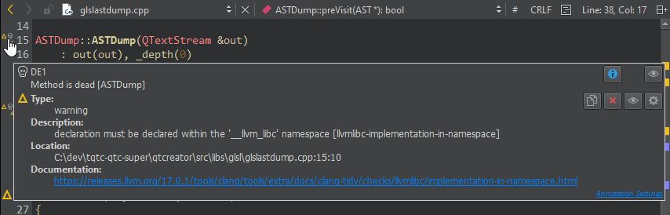
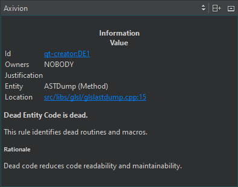
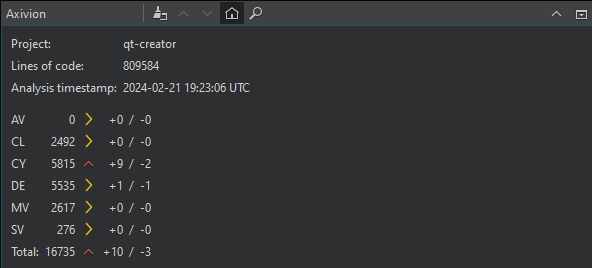
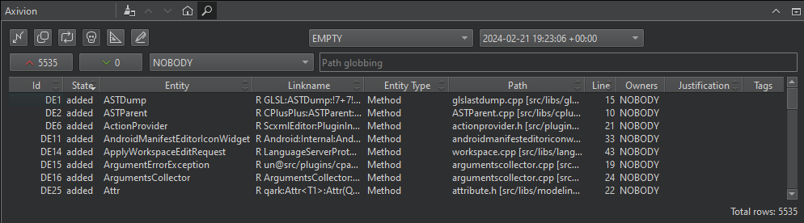

Prevent code erosion
Axivion Suite is a tool suite for protecting software from erosion. With static code analysis, architecture analysis, and code-smells-detection, you can:
- Check the source code for potential runtime errors.
- Use metrics to generate quantitative information about the internal quality of the source code.
- Run style checks to achieve compliance with coding guidelines.
- Detect both duplicates and similar pieces of code in the source code.
- Recognize cyclical dependencies at different levels.
- Detect unreachable code.
Connect to an Axivion dashboard server from Qt Creator to view results of code analysis.
Note: Enable the Axivion plugin to use it.
To use the plugin, you must set up a project in the Axivion dashboard server and link to it from Qt Creator. You can then see found issues in the Edit mode, issues in the Axivion dashboard, and issue details in the Axivion sidebar view.
The editor shows found issues as inline annotations. Hover the mouse over an annotation to bring up a tool tip with a short description of the issue.

Select to view detailed information about the issue in the Axivion sidebar view.

View issue counts
To view the issue counts, select (Show Dashboard) in the Axivion dashboard.

The Axivion dashboard lists the numbers of the following types of issues that Axivion found in the linked project:
| Icon | Type | Description |
|---|---|---|
| AV | Architecture violations, such as hidden dependencies. | |
| CL | Clones, such as duplicates and similar pieces of code. | |
| CY | Cyclic dependencies, such as call, component, and include cycles. | |
| DE | Dead entities are callable entities in the source code that cannot be reached from the entry points of the system under analysis. | |
| MV | Violations of metrics based on lines and tokens, nesting, cyclomatic complexity, control flow, and so on. | |
| SV | Style violations, such as deviations from the naming or coding conventions. |
To clear the view, select  (Clear).
(Clear).
To view issues, select  (Search for Issues).
(Search for Issues).
Filter issues

To filter issues, select:
- The icon of an issue type.
- Two analyzed versions to compare. Select EMPTY to see issues from the version you select in the right-side version box.
 to see only added issues.
to see only added issues. to see only removed issues.
to see only removed issues.- The owner of the issue. Select ANYBODY to see all issues, NOBODY to see issues that are not associated with a user, or a user name to see issues owned by a particular user.
- Path patterns to show issues in the files in the directories that match the pattern.
The information you see depends on the issue type. Double-click an issue to see more information about it in the Axivion sidebar view.
Jump to issues in the editor
Typically, the details for cycles and clones show several paths. To view the issues in the editor:
- Click in a location column (that shows a file or line) to open the respective location (if it can be found).
- Click in other columns to open the first link in the issue details. Usually, it leads to the Left location or Source location.
The easiest way to jump to the Right location is to select the link in the details or in the Right Path or Target Path column.
See also Enable and disable plugins, Link projects to Axivion dashboards, and Axivion.